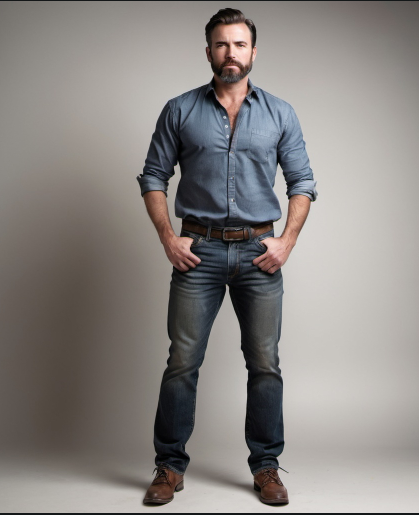
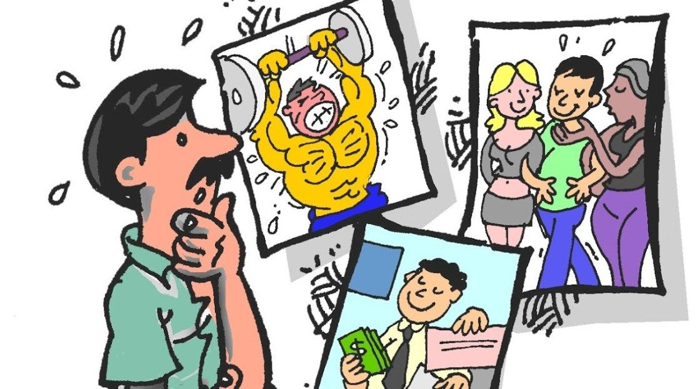
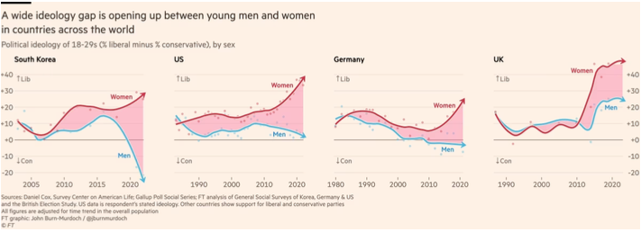

Sociología del Género
Clase 8: Feminidades y Masculinidades
SOL191 · Instituto de Sociología · PUC
Feminidades y Masculinidades
SOL191 · Clase 8: Feminidades y Masculinidades
Objetivos de hoy
- Revisar y evaluar diferentes definiciones teóricas de los conceptos de feminidades y masculinidades: masculinidad hegemónica, feminidad enfatizada, masculinidades híbrido y feminidades hegemónicas.
- Aplicar estos conceptos con ejemplos de estudios empíricos recientes.
- Analizar la “manosfera” como fenómeno contemporáneo y su relación con las crisis de masculinidad.
- Examinar la divergencia ideológica de género entre jóvenes en América Latina.
Wooclap: ¿Qué tan de acuerdo estás?
“Ser hombre hoy es más difícil que en el pasado”
Responde en la escala de 1 (muy en desacuerdo) a 7 (muy de acuerdo)
Masculinidad hegemónica (según R. Connell)
- Vivimos en una sociedad que es “patriarcal”. Los hombres, como grupo, tienen poder sobre las mujeres, como grupo.
- Sin embargo, no todos los hombres están en el poder o se sienten poderosos. La masculinidad tiene su propia jerarquía.
- La masculinidad hegemónica es la forma de masculinidad más dominante y poderosa. Otros tipos de masculinidad incluyen la masculinidad gay o masculinidades racializadas (masculinidades subordinadas).

Imagen creada por inteligencia artificial para: “foto de cuerpo completo de un hombre de verdad siendo masculino”
Masculinidad hegemónica (R. Connell)
- La masculinidad hegemónica (MH) es dominante sobre las masculinidades y feminidades subordinadas.
- MH es un tipo ideal o una fantasía que muy pocos hombres encarnan, pero que muchos luchan por alcanzar.
- El contenido varía en el tiempo y el espacio, pero actualmente en la sociedad occidental tiende a ser un hombre heterosexual, blanco, educado, rico y fuerte.
- El contenido es menos importante que la posición en la jerarquía. El contenido puede ir modificándose, como veremos en esta clase.

Feminidad enfatizada (R. Connell)
- No existe ninguna forma de feminidad que sea dominante. Más bien, las formas de feminidad son respuestas al dominio masculino.
- La feminidad enfatizada (FE), la forma más visible de feminidad, se organiza en torno al cumplimiento de la dominación masculina.
- Las FE incluyen rasgos y conductas que muestran dependencia de los hombres. ¿Ejemplos?
Masculinidad como homofobia (Kimmel)
- Kimmel afirma que la homofobia es un principio organizativo central de nuestra definición de masculinidad.
- El esfuerzo por demostrar la propia masculinidad a otros hombres conduce al silencio y la complicidad en torno al sexismo y la homofobia.
- La masculinidad no se demuestra ante las mujeres, sino ante otros hombres: es una “homosocialidad” constante donde el mayor temor es ser considerado insuficientemente masculino.
Pascoe sobre su libro: Dude, you’re a fag
¿Cuáles son las consecuencias de esta necesidad de demostrar la masculinidad hegemónica para la vida de los hombres?
Crisis de masculinidad (Bridges y Pascoe 2018)
- Connell dice que las relaciones de género son históricamente inestables y tienden a entrar en crisis. Estas crisis afectan las relaciones de género de manera incompleta.
- Se han intensificado en la historia reciente, resultando en “una gran pérdida de legitimidad del patriarcado” y “diferentes grupos de hombres están negociando esta pérdida en formas muy diferentes”.
- Los periodos de cambio pueden venir con un vértigo de género, un sentido de malestar e incomodidad en la medida que las estructuras y relaciones de género se van transformando.
- Esta crisis no es “de” la masculinidad sino de las relaciones de género: el marco hegemónico pierde legitimidad pero no ha sido reemplazado.
La manosfera y las masculinidades online
La “crisis de conexión” masculina (Equimundo 2024)
Datos del informe State of American Men 2023
- 48% de hombres jóvenes (18-23) dice que su vida online es más interesante que la offline.
- 2/3 de hombres jóvenes sienten que “nadie los conoce realmente”.
- 40% de los hombres confían en una o más voces misóginas online.
- 44% de hombres reportó pensamientos suicidas en las últimas dos semanas.
- Hombres jóvenes enfrentan una combinación de soledad, confusión sobre qué significa “ser hombre”, inestabilidad económica y dificultades en relaciones.
- La manosfera ofrece respuestas simples a problemas complejos: roles claros, comunidad, sentido de propósito.
- 53% de los hombres cree que “hoy en día los hombres la tienen más difícil que las mujeres”.
¿Y en Chile? (Encuesta ICSO-UDP, julio 2025)
“Ser hombre hoy es más difícil que en el pasado”
- Hombres: 54% de acuerdo
- Mujeres: 38% de acuerdo
- Derecha: 60% · Centro/Izquierda: 37%
“Es difícil saber cómo comportarse con las mujeres por temor a ser malinterpretado”
- Hombres: 68% de acuerdo
- Mujeres: 52% de acuerdo
Sin embargo…
- Los avances en derechos de las mujeres son importantes: 79%
- Prefiere sociedad donde hombres y mujeres compartan responsabilidades por igual: 67%
- 89% cree que es importante que los hombres expresen sus emociones
- Hombres que toman postnatal: 86% lo ve positivo
¿Qué es la manosfera?
Una colección diversa de sitios web, blogs y foros online que promueven la masculinidad, la misoginia y la oposición al feminismo. Incluye:
- MRAs (Men’s Rights Activists): activistas por “derechos de los hombres”
- MGTOW (Men Going Their Own Way): hombres que rechazan relaciones con mujeres
- PUAs (Pick-Up Artists): artistas de la seducción
- TradCons: conservadores tradicionalistas
- Incels: célibes involuntarios
La “cadena” de la manosfera (Bates)
Los contenidos se mueven de los grupos más extremos hacia el mainstream, ganando un “barniz de normalización” en el camino. Cada comunidad interactúa con las adyacentes, manteniendo la movilidad de ideas pero aislando los eslabones más altos de la censura pública.
La fórmula de la manosfera
1. Validación emocional
Explotan la inseguridad masculina. Culpan a otros (feminismo, sociedad) y canalizan el resentimiento.
“Me enseñaron a ser femenino, pero las mujeres rechazan al nice guy”
2. Aspiraciones
Ofrecen modelos claros y un camino paso a paso: fitness, dinero, éxito sexual.
Escuelas online con suscripción ($199/mes) sobre “productividad” y “energía masculina”
3. Comunidad
Ofrecen pertenencia y accountability grupal. Métricas de progreso. Identidad compartida.
Grupos activos en redes sociales y membresías pagadas
Visiones/respuestas al “vértigo de género”
Discursos que van contra ideas liberales sobre el género y que han tomado enorme popularidad, especialmente entre jóvenes. Las figuras cambian, pero la estructura del fenómeno se mantiene.
La manosfera mainstream
- Andrew Tate: ex boxeador, empresario. Fue la tercera persona más googleada del mundo en 2023. Baneado de Meta, TikTok y YouTube en 2022 por contenido misógino, pero su contenido circula masivamente a través de cuentas de fans y clips. Actualmente enfrenta juicio en Rumania por tráfico de personas y violación, y demandas civiles en Reino Unido por abuso sexual (juicio programado para junio 2026).
- Hamza Ahmed: el influencer de la manosfera más prominente en el Reino Unido según The Guardian. 2,2 millones de suscriptores en YouTube. Vende cursos de “escuela de Adonis” ($199/mes) sobre “productividad”, “energía masculina alfa” y “cómo conseguir novia”.
Las “tradwives”
- Nara Smith: 12 millones de seguidores en TikTok. Cocina elaborados platos desde cero en ropa de diseñador. Aunque ha rechazado la etiqueta tradwife (“soy una mamá que trabaja”), su estética representa la feminidad enfatizada como aspiración.
- Estee Williams: la tradwife original de TikTok. En 2025 abandonó el contenido tradwife tras una crisis familiar (su hija requiere un trasplante de corazón). Su caso ilustra la fragilidad de la feminidad enfatizada como proyecto de vida: la dependencia económica se vuelve una vulnerabilidad ante la adversidad.
Discusión en grupo
- ¿Qué nos dicen estas ideas sobre las masculinidades y feminidades actuales? ¿Qué rol o espacio tienen estas formas de masculinidad y feminidad?
- ¿Qué impactos (positivos o negativos) podrían tener estas ideas en la desigualdad de género?
- Pensando en el informe de Equimundo: ¿cómo se podría responder a la “crisis de conexión” masculina sin reforzar la misoginia?
Masculinidades híbrido (Bridges y Pascoe 2018)

- La masculinidad está cambiando.
- Masculinidades híbrido: la incorporación selectiva de elementos de identidad típicamente asociados con diversas masculinidades o feminidades marginadas y subordinadas en las expresiones e identidades de género de los hombres privilegiados.
- ¿Qué ejemplos de masculinidades híbrido dan en este artículo?
Masculinidades híbrido
- ¿Qué significan estos cambios, estas masculinidades híbrido? ¿Son cambios a la estructura de género? Hay dos miradas:
- Sí, reflejan un cambio en las relaciones de género donde estas nuevas configuraciones de identidad son una forma de resistencia a la desigualdad de género.
- Más que desafiar las relaciones de género, son parte de un proceso dinámico que se asocia a tres tipos de consecuencias que tienen las masculinidades híbrido.
Consecuencias de las masculinidades híbrido
Distancia discursiva (discursive distance)
- Crea espacio discursivo entre grupos de hombres privilegiados y la masculinidad hegemónica, permitiéndoles enmarcarse a sí mismos fuera de esos sistemas de privilegio y desigualdad.
- Ejemplos: “bromance”; hombres desaventajados como los dueños de las masculinidades “regresivas”, quienes si toman masculinidades híbrido enfrentan consecuencias muy diferentes.

Consecuencias de las masculinidades híbrido
Préstamo estratégico (strategic borrowing)
- Estas masculinidades están disponibles a hombres jóvenes, blancos, hetero, de una manera menos significativa que para “otros”, quienes producen parcialmente sus identidades en la lucha colectiva por sus derechos y reconocimiento.
- Turismo simbólico
- Disfrutar de los placeres asociados con la transgresión de los límites normativos de género y sexuales, pero evitando gran parte de la injusticia y el dolor.
- Ejemplo: hombre metrosexual que toma prestada la cultura gay.
Consecuencias de las masculinidades híbrido
Fortaleciendo límites (boundary strengthening)
- Fortalece límites simbólicos y sociales entre grupos (raciales, de género, sexualidad, clase), lo que esconde la desigualdad en formas históricamente novedosas.
- Tal como el “bromance”, el “dude sex” depende de relaciones simbólicas que desafían y al mismo tiempo refuerzan sistemas de poder y desigualdad.
Feminidades (Hamilton et al. 2019)
Cómo dos tradiciones sociológicas explican el rol de las feminidades en la dominación social
Connell y otros — Masculinidades
- Género como estructura de dominación independiente
- Feminidades complementan las masculinidades hegemónicas: cómplices pasivas en la reproducción de género.
- Feminidades enfatizadas: pasivo y mono categórico.
Hill Collins y otros — Dominación interseccional
- Ideas culturales de feminidad reproducen una matriz de dominación: ideas culturales de feminidad son racializadas, hetero-generizadas, de clase, etc.
- Todas las feminidades pueden ser subordinadas a las masculinidades hegemónicas, pero algunas feminidades juegan un rol poderoso en reproducir otras formas de desigualdad: dominación interseccional.

Feminidades hegemónicas
Ideales culturales de feminidad más celebrados en un momento y lugar determinados y que sirven para defender y legitimar todos los ejes de opresión en la matriz de dominación simultáneamente.
— Collins
Las feminidades hegemónicas pueden recibir ciertos “bonos” o “premios”. ¿Ejemplos?
Masculinidades hegemónicas en la clase dominante (Madrid 2016)
Estudia el proceso de construcción de masculinidades hegemónicas en la clase dominante chilena.
- ¿Qué hizo el autor en este estudio?
- ¿Cuáles son los tres tipos de colegios que identificó?
- ¿Cuáles son los principales resultados?
- ¿Cómo se podrían relacionar estos resultados con los conceptos de masculinidad hegemónica, masculinidades híbridas y masculinidades con perspectiva interseccional?
- Madrid no habla de las feminidades, menos de las feminidades hegemónicas y su relación con la clase social. ¿Cuál creen que es el rol de las feminidades en este estudio?
Divergencia ideológica de género
¿Se están separando políticamente los hombres y mujeres jóvenes?
Una nueva brecha global de género (Burn-Murdoch 2024)

Divergencia ideológica en América Latina (Argote 2026)
Datos y método
- LAPOP AmericasBarometer (2006-2023)
- 6 países: Argentina, Brasil, Chile, Colombia, México, Uruguay
- 71.228 observaciones
- Análisis por cohorte de nacimiento
Hallazgo central
Existe una clara brecha ideológica de género entre los jóvenes: mujeres nacidas después de 1980 se inclinan a la izquierda y hombres a la derecha. Esta divergencia está ausente en generaciones anteriores.
El puzzle
La brecha se da en las etiquetas ideológicas (izquierda-derecha) pero no en posiciones sustantivas. No hay divergencia en:
- Apoyo a reducir desigualdad
- Matrimonio igualitario
- Aborto
Las tendencias en estos temas son paralelas entre géneros.
¿Qué explica la brecha? (Argote 2026)
Lo que NO la explica
- ❌ Backlash cultural: los hombres jóvenes no son más conservadores en temas sociales que los mayores
- ❌ Educación: la brecha existe tanto en universitarios como en no-universitarios
- ❌ Retroceso económico: el enfriamiento en apoyo a redistribución es generacional y compartido
Lo que sugiere la evidencia
- ✓ Efecto de periodo post-2015, concentrado en los hombres
- ✓ Coincide con Ni Una Menos y Marea Verde
- ✓ Los hombres rechazan la identidad de izquierda — reaccionan contra lo que esa etiqueta representa
- ✓ Divergencia identitaria: clasificación en tribus opuestas por apego simbólico, no por desacuerdo en políticas
Datos electorales y actitudinales: la brecha se traduce en votos
Elecciones recientes (Argote 2026)
- Argentina 2023: entre 18-25 años, 56% hombres votaron por Milei vs. 34% mujeres (22 puntos de diferencia)
- Chile 2021: 68% mujeres sub-30 votaron por Boric. Brecha de participación: 63% mujeres vs. 47% hombres
- Brasil 2022: mujeres 16-29 apoyaron a Lula 58% vs. 44% de hombres jóvenes
Chile hoy (ICSO-UDP julio 2025)
- Cambios en relaciones entre sexos “han perjudicado a los hombres”: 33% (hombres 39%, mujeres 28%; derecha 45%, izquierda 24%)
- “Demasiadas reglas sobre lo que los hombres pueden decir o hacer”: hombres 58%, mujeres 44%
- Preferencia presidencial: Kaiser (libertario) 6% — su partido tiene el mayor % de militantes hombres de Chile
Actividad en grupo: Brecha de género ideológica en América Latina
Grupos de 4-5 estudiantes. Revisen el material proporcionado y discutan:
Hallazgo principal: Argote (2026) encuentra una “divergencia identitaria” — hombres y mujeres jóvenes se identifican con tribus ideológicas opuestas pero no difieren en posiciones sustantivas (redistribución, matrimonio igualitario, aborto). ¿Cómo interpretan este resultado?
Contexto latinoamericano: A diferencia de EEUU/Europa, la educación universitaria no explica la brecha. ¿Por qué creen que el efecto de la universidad es diferente en América Latina?
Conexión con masculinidades: ¿Cómo se relaciona esta divergencia con los conceptos de masculinidad hegemónica, crisis de masculinidad y manosfera que vimos hoy? ¿Es la brecha una manifestación del “vértigo de género” de Bridges y Pascoe?
Experiencia propia: ¿Observan esta brecha en su generación en Chile? ¿En qué se manifiesta? ¿Qué rol juegan las redes sociales?
Recordatorios
SOL191 Sociología del Género · Clase 8